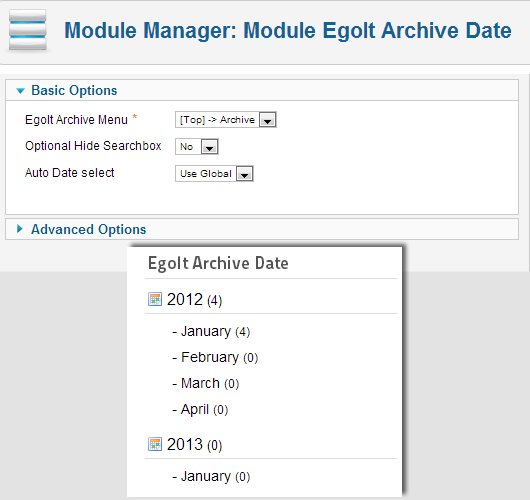

Index
1) Start Using Egolt Archive
Egolt Archive is a user-friendly product and you can setup it very easily in just less than a 1 minute! This section will help you to install it correctly.
1.1) Requirements
Egolt Archive will only work correctly if your setup meets these requirements:
- Up-to-date version of compatible softwares:
- Joomla! 2.5
- Joomla! 3.x
- PHP 5.3+
- MySQL 5+
Important: We can only provide support for setups that:
- meet the above requirements;
- do not have 3rd party files or software core files which have been altered in any way.
1.2) Installation
You can install Egolt Archive by using the Joomla! core extension manager available in the Joomla! Administrator Control Panel.
Note: When updating Egolt Archive, you do not need to uninstall it first. The package will update all the files automatically.
Keep in mind that when you update to a major new version (or uninstall first), you might loose some configuration settings.
To install via the Joomla! Extension Manager, just follow these steps :
- Download the extension zip.
- Log into your Joomla administrator
- In the menu, choose: Extensions >> Manage (Extension Manager)
- Under 'Upload Package File' select the extension zip.
- Click on 'Upload & Install'
After successful installation you will see the below page:
If you have problems installing Egolt Archive, please try the manual installation process as described here: docs.joomla.org/Installing_an_extension
1.3) Create a Menu
When you want to use the Egolt Archive the first step is to create a menu of Egolt Archive. It is necessary due to some security reasons like archive source restriction based on your control. Maybe the site administrator don't want visitors have the archive of any content.
Go to "Menu Manager" in Joomla! administration panel, then click on the new button. In the next page, select "Egolt Archive -> General view" as Menu Item Type. Then all the Egolt Archive controls will appear and you can set your search and archive page.
The archive controls which will appear after select the Egolt Archive menu are displayed in below picture:
1.4) Uninstallation
You can uninstall Egolt Archive by using the Joomla! extension manager available in the Joomla! Administrator Control Panel.
For uninstall Egolt Archive just uninstall "Egolt Archive" Package. Then all extensions related to the product will be uninstalled automatically.
Notice that Egolt Framework will not be uninstalled over the uninstallation process described above. If you are sure that no other Egolt products are running in your site, you can delete both library and plugin that are related to Egolt Framework.
2) Egolt Archive Component
The main extension of the Egolt Archive is its component. It is the heart of the product and have the front-end and back-end section.
2.1) Menu and General Settings
There are lot of options which could be used both in Egolt Archive menu settings and general parameters of the component. These options help users to use Egolt Archive in the way they want. So we highly recommend users to review these options before using the product.
2.1.1) Layout Options
All of the options that located here are main options and changing them will turn the product in a very different manner. Also all of these options are necessary and you must choose one of them.
Archive source : It determined the source of archive that user want to use. It could be Joomla! content, K2, jDownloads, VirtueMart and all other sources that are available for search and archive.
| Option | Description |
|---|---|
| Joomla! content | It refers to Joomla! native content component. |
| K2 | It is one of the most popular content system for Joomla!. Read more about it here. |
| jDownloads | It is one of the most popular download systems for Joomla!. Read more about it here. |
| VirtueMart | It is one of the most popular shopping system for Joomla!. Read more about it here. |
| Phoca Download | It is the most popular download systems for Joomla!. Read more about it here. |
| EasyDiscuss | It is a Joomla forum extension for Joomla! It allows you to build forums or a question and answer community on your site easily. Read more about it here. |
View Type : You can build the Egolt Archive in different views.
| Option | Description |
|---|---|
| Text and Image | It is the view which could be used to show both text and images of source. |
| Title Only | It is suitable for search purposes and in this type of view text and images are not available. |
| Feed | This view convert the archive data to RSS or Atom feed. Also if it uses with Egolt Search or Date module it could built many customized feeds, for example each year and month RSS feeds! |
| Photo Gallery | It build a photo gallery of archive data. Furthermore if this view uses with Egolt Search Module, it will provide a good image search system! |
Calendar Type : All archive and search data in Egolt Archive could be present in different type of calendars without any hack or customization in the source data or component, because all data are based on Egolt Framework with specific artitecture. Now "Gregorian(international)" and "Solar Hijri(Persian)" calendars are supported by the product.
| Option | Description |
|---|---|
| Gregorian (international) | It is basic calendar for international events that is based on birth date of Christ. |
| Solar Hijri (Persian) | This Calendar is one the world's most popular calendars which start from Mohammad profit movement from Mecca to Medina city. It uses in Iran, Afghanistan, Tajikistan and some other countries. |
| Islamic Calendar (Hijri) | The Islamic calendar, Muslim calendar or Hijri calendar (AH) is a lunar calendar consisting of 12 months in a year of 354 days. |
| Russian Calendar | It is based on Gregorian calendar and it is used in Russia and some other countries. |
| Turkish Calendar | It is based on Gregorian calendar and it is used in Turkey. |
2.1.2) Archive General Setting
You can see many options about only archive configuration and its box here. Also "Thumbnails Settings" is embedded in these settings that are very useful and important.
The below table shows all parameters that are available in this section:
| Parameter | Description |
|---|---|
| Categories included | You can set which categories must be seen and searched by user. You can insert the ids, separate them with comma(,) sign. If you want to disable this option fill it blank. |
| Categories not included | You can set which categories must NOT be seen and searched by user. You can insert the ids, separate them with comma(,) sign. If you want to disable this option fill it blank. |
| Date format | The date format used in archive could be changed by this parameter. The format is based on PHP date format, for more information see here. |
| Default Sorting | You can choose the default sorting for archive items and serach results. Options you could select for this parameter are "New items first", "Old item first", "Date descending", "Date ascending", "Alphabetical descending" and "Alphabetical ascending". |
| Detail Info in Items | |
| Display All Info | You can choose weather or not display detail info per each item in archive and search list. The detail info includes "Date", "Category", "Category link", "Author" and "Hits". Otherwise you can select YES and then by below parameters in this group determine what info must be shown in the list. |
| Display Date | You can choose whether or not display date for each item in the list. If "Display All Info" parameter set to "No", this info will not show in the list. |
| Display Category | You can choose whether or not display category for each item in the list. If "Display All Info" parameter set to "No", this info will not show in the list. |
| Display Category link | You can choose whether or not add category link to category title for each item in the list. If "Display All Info" parameter set to "No", this info will not show in the list. |
| Display Author | You can choose whether or not display author for each item in the list. If "Display All Info" parameter set to "No", this info will not show in the list. |
| Display Hits | You can choose whether or not display hits for each item in the list. If "Display All Info" parameter set to "No", this info will not show in the list. |
| Text Settings | |
| Allowed text tags | You can set which tags are allowed using for descriptions of each item. By default all HTML tags filter and omitted in description, Buy with this parameter you can allow any tags you want to exclude it from filtering. For example: "<p><strong>" |
| Text Char limit | You can set the charachter quantity limitation here. For example: "150" |
| Text trailer | If text is bigger than "Text Char limit", text trailer will be displayed. For example: "..." |
| Thumbnails Settings | |
| Display thumbnail | You can choose whether to display thumbnails for each item or not. |
| Thumbnail Engine | By this parameter, you can choose the engine for thumbnail resizing and caching. If it set to "Off", the images do not cache; so originial images will be shown with HTML attribute for width and height. You can speed up the site loading time and decrease the bandwidth usage by using a thumbnail engine. |
| Thumbnail Type | You can select the thumbnail process type: "Crop" or "Resize". |
| Show default thumbnail | If there is no image for an item and this parameter is enabled, a default image set for the item. You can change the default image in this path: "media/egoltarchive/images/default.png" |
| Thumbnail position | You can choose the position of the item's thumbnail: "Right" or "Left". |
| Thumbnail width | You can set the width of the item's thumbnail in pixel(px). |
| Thumbnail height | You can set the height of the item's thumbnail in pixel(px). |
| Crop Start Width | If you select the "Crop" option in "Thumbnail Type", you can set the item's thumbnail width start point in pixel(px) by using this parameter. |
| Crop Start Height | If you select the "Crop" option in "Thumbnail Type", you can set the item's thumbnail height start point in pixel(px) by using this parameter. |
2.1.3) Searchbox Settings
There are a lot of options about only searchbox that could be configured here.
The below table shows all parameters that are available in this section:
| Parameter | Description |
|---|---|
| Display Searchbox | You can select whether or not display whole searchbox. |
| Auto hide Searchbox | If this parameter set to "Yes", searchbox will hide in all pages expect the first page. By this way, users by click on the "Change Search Parameters" button will see the searchbox. |
| Historical Search | You can select whether or not display historical search includes "Date", "Duration" and "Between Dates" search. |
| Display Ordering | You can choose display the ordering option in searchbox for users or not. |
| Auto Date select | If this parameter set to "Yes", only non-empty months and years will be displayed in searchbox. |
| categories search settings | |
| categories search | You can choose display the ordering search option in searchbox for users or not. |
| All categories option | You can choose display the "All categories" option in search categories or not. |
| Authors Search Settings | |
| Authors Search | You can select whether or not display authors search option for users. |
| All Authors Option | You can choose display the "All authors" option in search authors or not. |
| Authors name Source | You can select the source of the authors name. Options of the this parameter are "Only Original names of Authors", "Only Alias names of Authors" and "Both Original and Alias names of Authors". |
| Include text settings | |
| Include text | You can select if the items could be searched for some user defined text or not. |
| Exact phrase option | You can select whether or not display Exact phrase option in "Include text" parameter for users. |
| Not include text settings | |
| Not include text | You can select if the items could be searched for not including some user defined text in detail of item or not. |
| Exact phrase option | You can select whether or not display Exact phrase option in "Not include text" parameter for users. |
2.1.4) Paging Settings
There are some options about paging in archive here. You can set the number of items which you want to display in each page by using "Items per Page" option. "Jump Number" is another option that you could jump the items from the first of list by using it. Also you can set the position of the paging by "Paging Position" option.
2.1.5) Feed View Settings
You can select the type of feed here. RSS and Atom feeds are available now.
2.2) About
In the back-end of component you can see this page. About page have a good information about WHAT is Egolt Archive and WHO build and support it. Also the features of the product is mentioned in this page.
3) Egolt Archive Date Module

This module shows the list of years and months with number of items for each month or year. Also you can choose whether or not show empty months or years. All items link to the Egolt Archive Component.
4) Egolt Archive Search Module
By this module, users could search in the archive you defined by Egolt Archive in your site. All items link to the Egolt Archive Component.
5) Egolt Framework
Egolt Framework provide basic functionality for all Egolt products. It reduces the bugs of our softwares and speed up their development process. This framework includes one library (lib_egoltframework) and one plugin (plg_egotrigger).
Remember that "Egolt Framework Trigger plugin"(plg_egotrigger) must be enabled to use Egolt Archive.